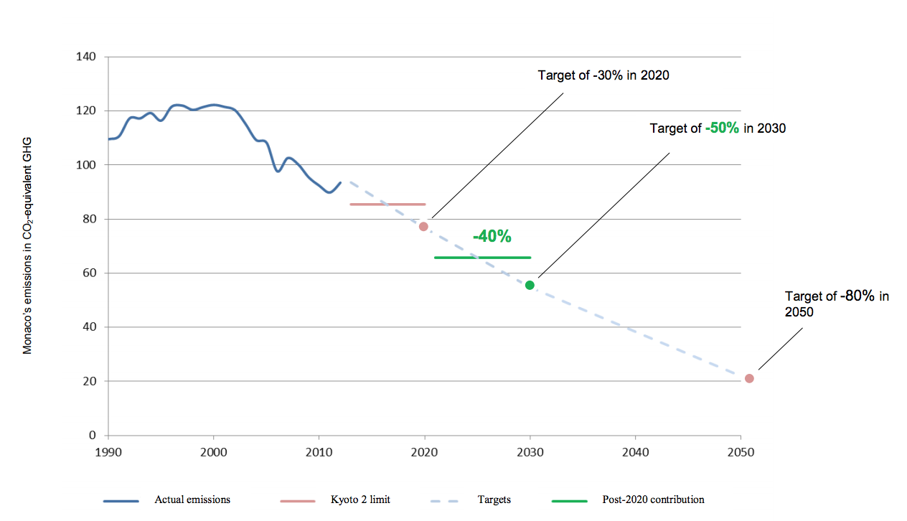

Figure 2: Graph showing the Principality of Monaco’s reduction target assuming two commitment periods of five years each
United Nations Framework Convention on Climate Change
29 July 2015
This document constitutes the “Intended Nationally Determined Contribution” of the Principality of Monaco under the United Nations Framework Convention on Climate Change in expectation of the adoption, at the end of the 21st Conference of the Parties (December 2015), of a legally binding agreement applicable to all Parties to the Convention.
The Principality of Monaco is a city state of 203 hectares. Its diversified economy is based primarily on services, construction, tourism and the banking sector. It is an enclave of France, located 10 kilometres from the Italian border.
The topography of the Principality comprises a mountainous cirque dropping down to the Mediterranean Sea. The country’s entire territory is urbanised, and forms the centre of an economic urban area which also includes neighbouring French towns.
The resident population is 37,000, while a further 40,000 people cross the border every day to work in the Principality.
Since his accession in 2005, H.S.H. Prince Albert II has made protecting the environment a priority of his Government’s policy, at both the national and international levels.
The Principality of Monaco ratified the United Nations Framework Convention on Climate Change (UNFCCC) on 20 November 1992 and the Kyoto Protocol on 27 February 2006.
Having signed up to Annex 1 of the Convention with a commitment to reduce emissions by 8% compared with 1990 during the first period of the Kyoto Protocol, the Principality has fulfilled its obligations, reducing emissions by 13.18% compared with 1990.[1]
Monaco continued its commitment by agreeing to the Doha Amendment on 27 December 2013. The country’s target for the second period of the Kyoto Protocol is to reduce emissions by 22% on average over the period 2013-2020.
At the Climate Summit convened by the Secretary-General of the United Nations on 23 September 2014, H.S.H. Prince Albert II recalled the target that the Principality of Monaco set itself to reduce its greenhouse gas emissions by 30% by 2020 and 80% by 2050, compared with the reference year, while achieving carbon neutrality by that date.
Aware that the challenge of reducing emissions is very much a collective one, the Principality of Monaco would like to offer its full support to the joint effort. The country’s hope is that through the commitment of all Parties, it will be possible to achieve the target consistent with restricting the average rise in global temperatures to less than 2°C compared with pre-industrial levels, and if possible, to less than 1.5°C.
With a view to the adoption of a legally binding agreement in Paris in December 2015, the Principality of Monaco wishes to contribute to the joint effort by adopting a target to reduce its emissions by 50% by 2030, compared with the reference year of 1990.[2]
The Principality of Monaco envisages that this commitment will be subject to a formal process similar to that used in the Kyoto Protocol.
The country therefore proposes that its commitment been turned into a quantitative target, which could be envisaged over ten-year period, or two successive five-year periods.
| Option 1: 10-year commitment period | ||
| Quantified commitment to limit or reduce emissions over the period (as a percentage of reference year emissions) | Declaration of target to reduce greenhouse gas emissions by 2030 as a percentage of reference year emissions | |
| 2021-2030 | 60% (or -40%) | -50% |
| Option 2: Two successive five-year periods | Quantified commitment to limit or reduce emissions over the period (as a percentage of reference year emissions) | Declaration of target to reduce greenhouse gas emissions by 2030 as a percentage of reference year emissions |
| 2021-2025 | 65% (or -35%) | -40% |
| 2026-2030 | 55% (or -45%) | -50% |
| Information type | Monaco’s commitment |
|---|---|
| Description of contribution | Quantified reduction commitment based on the model of the two previous Kyoto periods. |
| Coverage in terms of: | |
| a) sector | All sectors are covered (see details regarding forests). |
| b) greenhouse gas | All seven Kyoto gases will be covered. |
| c) percentage of national emissions covered by the target | 100% of national inventory emissions are covered. |
| Reference year | The reference year is 1990 for CO2, CH4 and N2O. For fluorinated gases (including NF3), the reference year is 1995. |
| Accounting for forests | Given its entirely urbanised nature, the Principality will consider all of its green spaces under the category of “parks and gardens”, and will not report emissions under the forestry sector. |
| Inventory methodologies and GWPs[3] used | 2006 IPCC guidelines, GWPs published in the IPCC’s Fourth Assessment Report. |
| Use of mechanisms for international transfer of greenhouse gas reduction units. | The Principality of Monaco intends to achieve its emissions reduction target by implementing domestic measures. It does not, however, exclude the use of mechanisms for the international transfer of reduction units in the event that domestic emissions reductions prove insufficient at the end of the commitment period. |

Figure 1: Graph showing the Principality of Monaco’s reduction target assuming a commitment period of 10 years
Figure 2: Graph showing the Principality of Monaco’s reduction target assuming two commitment periods of five years each
The Principality of Monaco intends to achieve its emissions reduction target by implementing domestic measures. It does not, however, exclude the use of mechanisms for the international transfer of reduction units in the event that domestic emissions reductions prove insufficient at the end of the commitment period.
The proposed quantitative commitment therefore assumes that mechanisms for the international transfer of emissions reduction units will be available.
To this end, the Principality of Monaco supports the adoption of regulations which will guarantee the real, additional, permanent and verifiable nature of net emissions reductions or emissions avoided at the source of transferable units. The country is committed to using only units which offer this type of guarantee.
The Principality of Monaco is, in addition, in favour of limited use of international mechanisms to transfer units to achieve the Parties’ targets.
The main sources of emissions in the Principality of Monaco are road transport, waste-to-energy and heating and air conditioning in buildings. These three sources each account for nearly 30% of Monaco’s emissions. The addition of emissions linked to fluorinated gases brings the figure to more than 98% of the Principality of Monaco’s emissions.
The Principality of Monaco has drawn up an action plan which takes account of this emissions profile and prioritises actions relating to the most important sources.
With regard to road transport, for more than 20 years the Principality of Monaco’s transport policy has been based on the following principles:
The Principality intends to strengthen its emissions reduction policy through balanced measures in each of these three areas. The pedestrian modal share for intra-urban journeys is already above 50%. The policy of developing mechanised walkways, escalators and lifts should reinforce people’s instincts to travel on foot. The introduction of a dedicated public transport lane serving the length of the Principality is being studied. This should encourage journeys combining public transport and walking.
Electric and hybrid vehicles currently account for 2.57% of all cars in the Principality of Monaco. Very rapid growth in sales of hybrid and electric vehicles was recorded at the beginning of 2015. This is due to the availability of more attractive new models and the Prince’s Government’s incentive policy.
The implementation of this incentive policy will be continued and adapted over the coming years to ensure that road transport will play its part in achieving the national emissions reduction target in the Principality.
With regard to waste-to-energy, the Principality of Monaco has had a tri-generation plant since 1982, and this is due to be replaced soon. Reducing emissions from this source and from waste management more broadly is a priority for the Government.
The focus is on both technical treatment systems and defining a new way to manage waste. In this area, the technical choices made will have an impact on emissions for the next 30 years. The Government has launched a number of studies on this subject, some of which are currently underway.
Emissions associated with buildings are the third major source of emissions in the Principality of Monaco. Various approaches to reducing emissions in new construction and in old buildings have been deployed and strengthened in recent years.
Due to a previous acquisition, the Principality of Monaco also has a large number of seawater heat pumps, which constitute an important energy asset. Nevertheless, there is still significant potential for limiting emissions and improving energy efficiency in existing buildings.
As part of its efforts to achieve its emissions targets and communicate its post-2020 commitment, the Principality of Monaco decided to define a reduction strategy for buildings throughout the country.
This strategy will require performance and energy substitution measures. It should lead to the formulation of an energy master plan which will cover supply, energy carriers and local production, with the long-term goal of carbon neutrality.
Meteorological and climate records for Monaco are available dating back to 1911. An analysis of data for the longest available consistent period has made it possible to go back to 1969 and has demonstrated a progressive upward trend in the annual temperature, amounting to 1.5° over a period of 45 years.
Much more recently, studies on the impact of climate change began in 2013 with the analysis of local climate trends (forecasts) and a study focusing specifically on the period of activity of mosquitoes (aedes albopictus) and on changes in heating and cooling degree days.
A vulnerability study aimed at defining an action plan for adapting to climate change in Monaco was launched in 2014. The study should be completed by the end of 2015. As part of this work, the Principality first undertook a literature review to consolidate climate forecasts for the near term (2021-2050) and the long term (2071-2100). A summary of this work was sent to the country’s key stakeholders in the following areas:
The exhaustive work of analysing vulnerabilities and constructing an action plan is based on the involvement of these national stakeholders. The adaptation strategy will be made up of an action plan accompanied by a monitoring and evaluation framework.
The climate change vulnerability study also aims to feed into risk mapping work which is being carried out by Monaco’s military force and takes into account the unknown factors associated with human activities, covering both the climate and other telluric events.
As part of its participation in the first period of the Kyoto Protocol, the Principality of Monaco undertook a range of mitigation actions, prioritising those with the most promising cost- performance ratio (substituting gas for fuel oil, for example).
The target of reducing emissions by 50% by 1990 means that simple performance improvements are no longer sufficient; energy transition in the construction industry and significant changes in waste treatment are required. These steps will necessitate the deployment of carbon-neutral type technologies, which have reached varying levels of maturity. They are often little used and expensive.
Thus, the approaches envisaged by the Principality of Monaco are ambitious. They will require significant investment on the part of the Government but will also involve individuals and the private sector, which will need to adapt to new regulations.
These efforts should allow the Principality to achieve its emissions targets which are in line with the IPCC emissions scenario[5] enabling the temperature rise to be kept below two degrees Celsius, with reductions of between 40% and 70% by 2050, compared with 2010.
By adopting a target which goes beyond the reduction requirements stated by the IPCC at the global level and by supporting the development of the latest technologies, the Principality of Monaco wishes to demonstrate its full commitment to this collective process. Despite the fact that it represents only a small proportion of global emissions, Monaco has the capacity to become a forerunner in the deployment of innovative, non-emitting modes of transport and energy consumption, and to support innovative waste processing techniques and the development of the circular economy.
Principality of Monaco National Inventory Submission, submitted on 3 September 2014: http://unfccc.int/national_reports/annex_i_ghg_inventories/national_inventories_submissions/items/8108.php ↩
The reference year is 1990 for CO2, CH4 and N2O. For fluorinated gases (including NF3), the reference year is 1995. ↩
Global Warming Potentials ↩
In accordance with the provisions of paragraph 14 of Decision 1/CP.20, this section aims to provide information on the way in which the Principality of Monaco “considers that its intended nationally determined contribution is fair and ambitious, in light of its national circumstances, and how it contributes towards achieving the objective of the Convention.” ↩
RCP 2.6 scenario ↩